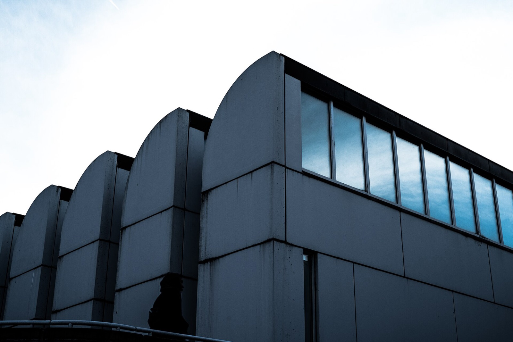

Berlin modernism · three scales
Berlin Bauhaus Lineage Map
Read an archive, a house and a public hall as three different Berlin connections to Bauhaus ideas and Mies van der Rohe.
Use this as a reading board, not a route. Tap a place to move the map, see one photograph and learn what to notice there. The three points are deliberately spread across Berlin.
Three real Berlin coordinates
Follow the thread across the city
Map tiles © OpenStreetMap contributors. Opening information and exhibitions can change; use the official links in each place card.
The original museum building makes its roofline visible before you enter.
01 · Collection
Bauhaus-Archiv / Museum für Gestaltung
Knesebeckstraße 1 · Charlottenburg
Use the temporary museum when you want the movement's ideas and objects before you start matching labels to buildings.
What to notice
Keep the distinction
One thread, three different questions
- 01Archive
What did the movement want objects and rooms to do?
- 02House
How can material and a garden change daily space?
- 03Hall
How can a structure hold a public room open?
Do not turn the line into a forced itinerary. Keep the place that changed how you looked, and check its official page before you travel there.